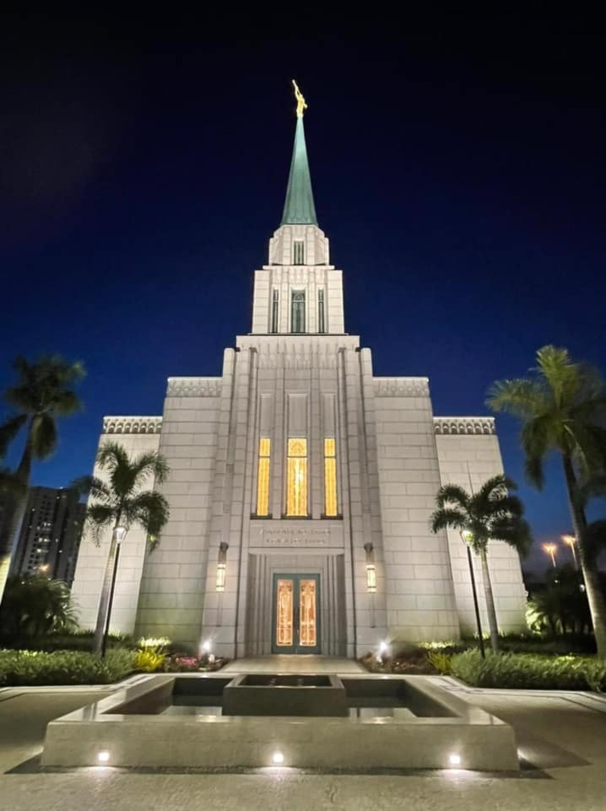

Rio de Janeiro Brazil

About the Temple
The Rio de Janeiro Brazil Temple is the eighth operating temple of the Church in Brazil. It features a beautiful Art Deco architectural style that harmonizes perfectly with the iconic style found throughout the city.
Dedicated 8 May 2022: Dedicatory Prayer
Visiting Information
- Location: Av. das Américas, 9005 - Barra da Tijuca, Rio de Janeiro - RJ, 22793-081
- Hours: Check Ordinance Schedule
- Phone: +55 21 3433-4100
- Housing: Patron Housing Available